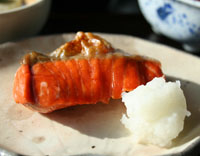
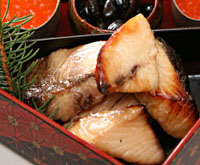
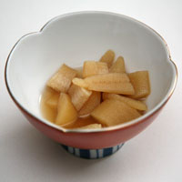
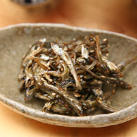
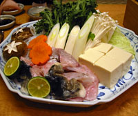

Fish & Seafood RecipesGrilled Shake (salmon) or Saba (mackeral)The most delicious way to enjoy fish is to simply salt it and grill it. If you are lucky enough to live near a Japanese market, look for amajake (lightly salted salmon). Contrary to the name, it is plenty salty. In my next life, I would love to have a grill with ventilation installed on my stove. In absence of this, I place the rack of the broiler at it's highest position, as close to the heat source as possible.RECIPE Teriyaki Glazed Hamachi (yellowtail) or BuriI find teriyaki sauces served in U.S. restaurants way too sweet, and bottled teriyaki sauce is even worse. This marinade is so easy, and compliments oily varieties of fish such as mackerel, halibut, and hamachi perfectly. But my favorite type of fish for this preparation is buri, which is available in the winter months. The rich and intense flavor of Buri is perfectly suited to the glaze.RECIPE Tazukuri (sardines)Part of the traditional Oshogatsu menu of preserved osechi-ryori items, this dish can keep almost indefinately. However, the sweet, sticky and slightly crunchy tiny fish are usually quickly gobbled up, Dried sardines are simmered in mirin and sprinkled with sesame seeds. They symbolize a bountiful harvest, (sardines were once used as fertilizer) and literally translates as “making rice fields”. Full of calcium, this dish is great for strong bones. Shown served in a contemporary stoneware oblong bowl.RECIPE Fugu Tetchiri (blowfish nabe)I know it's not fair, as fugu is virtually impossible to find outside of Japan, but I LOVE it, and couldn't resist posting a recipe. I haven't made it at home, but have enjoyed it many times in Japan without ever having the slightest tinge of fear. For more about this infamousand highly poisonous fish, read the fish and seafood page in the ingredient section. You can substitute a firm and meaty type of fish such as monkfish or red snapper, and your nabe will be almost as delicious. Or, substitute chicken, as the dense texture of fugu is often compared to chicken. The secret to great nabe of any variety is the ponzu sauce, which I've tried to approximate here. Lime can be substituted for the sudachi seen at right.RECIPE |
|





|